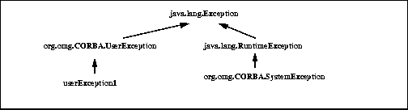

Mapping IDL to Java
5

Mapping IDL to Java |
5 |
|
The rationale for design decisions can be found in Chapter 4, "Overall Design Rationale".
In most cases examples of the mapping are provided. It should be noted that the examples are code fragments that try to illustrate only the language construct being described. Normally they will be embedded in some module and hence will be mapped into a Java package.
In addition, because of the nature of the Java language, a single IDL construct may be mapped to several (differently named) Java constructs. The "additional" names are constructed by appending a descriptive suffix. For example, the IDL interface foo is mapped to the Java interface
foo, and additional Java
classes fooHelper and
fooHolder.In those exceptional cases that the "additional" names could conflict with other mapped IDL names, the resolution rule described above is applied to the other mapped IDL names. I.e., the naming and use of required "additional" names takes precedence.
For example, an interface whose name is fooHelper or fooHolder is mapped to
_fooHelper or
_fooHolder respectively,
regardless of whether an interface named foo
exists. The helper and holder classes for interface
fooHelper are named
_fooHelperHelper and
_fooHelperHolder.IDL names that would normally be mapped unchanged to Java identifiers that conflict with Java reserved words will have the collision rule applied.
Helper, where <type> is the name of IDL user defined type.
Holder, where <type> is the name of an IDL defined type (with certain exceptions such as typedef aliases).
Holder, where <basicJavaType> is one of the Java primitive datatypes that is used by one of the IDL basic datatypes (Section 5.4.1.2, "Holder Classes).
Package, where <interface> is the name of an IDL interface (Section 5.15, "Mapping for Certain Nested Types).
_) prepended.
IDL declarations not enclosed in any modules are mapped into the (unnamed) Java global scope.
// IDL
module Example {...}
// generated Java
package Example;
...
The potential mismatch can occur when the range of the Java type is "larger" than IDL. The value must be effectively checked at runtime when it is marshaled as an in parameter (or on input for an inout), e.g. Java chars are a superset of IDL chars.
Figure 5-1 Basic Type Mappings
5.4.1.1 Future Support
In the future we expect the "new" extended IDL types fixed, and possibly long double, to be supported directly by Java. Currently there is no support for them in JDK 1.0.2, and as a practical matter, they are not yet widely supported by ORB vendors. We would expect them to be mapped as follows:
|
IDL Type |
Java type |
Exceptions |
|
long double |
|
|
|
fixed |
|
CORBA::DATA_CONVERSION |
A future revision of this specification should make support of this mapping normative.
5.4.1.2 Holder Classes
Support for out and inout parameter passing modes requires the use of additional "holder" classes. These classes are available for all of the basic IDL datatypes in the org.omg.CORBA package and are generated for all named user defined types except those defined by typedefs. Holder to the mapped (Java) name of the type. Holder, e.g. IntHolder. See Section 5.2, "Names" for a description of the implications on possible collisions with user defined names.
Each holder class has a constructor from an instance, a default constructor, and has a public instance member,
value, which is the typed value. The default constructor sets the value field to the default value for the type as defined by the Java language: false for boolean, 0 for numeric and char types, null for strings, null for object references.org.omg.CORBA.portable.Streamable interface.Streamable interface. They are in the org.omg.CORBA package.// Java
package org.omg.CORBA;
final public class ShortHolder {
public short value;
public ShortHolder() {}
public ShortHolder(short initial) {
value = initial;
}
}
final public class IntHolder {
public int value;
public IntHolder() {}
public IntHolder(int initial) {
value = initial;
}
}
final public class LongHolder {
public long value;
public LongHolder() {}
public LongHolder(long initial) {
value = initial;
}
}
final public class ByteHolder {
public byte value;
public ByteHolder() {}
public ByteHolder(byte initial) {
value = initial;
}
}
final public class FloatHolder {
public float value;
public FloatHolder() {}
public FloatHolder(float initial) {
value = initial;
}
}
final public class DoubleHolder {
public double value;
public DoubleHolder() {}
public DoubleHolder(double initial) {
value = initial;
}
}
final public class CharHolder {
public char value;
public CharHolder() {}
public CharHolder(char initial) {
value = initial;
}
}
final public class BooleanHolder {
public boolean value;
public BooleanHolder() {}
public BooleanHolder(boolean initial) {
value = initial;
}
}
final public class StringHolder {
public java.lang.String value;
public StringHolder() {}
public StringHolder(java.lang.String initial) {
value = initial;
}
}
final public class ObjectHolder {
public org.omg.CORBA.Object value;
public ObjectHolder() {}
public ObjectHolder(org.omg.CORBA.Object initial) {
value = initial;
}
}
final public class AnyHolder {
public Any value;
public AnyHolder() {}
public AnyHolder(Any initial) {
value = initial;
}
}
final public class TypeCodeHolder {
public TypeCode value;
public typeCodeHolder() {}
public TypeCodeHolder(TypeCode initial) {
value = initial;
}
}
final public class PrincipalHolder {
public Principal value;
public PrincipalHolder() {}
public PrincipalHolder(Principal initial) {
value = initial;
}
}
// Java
final public class <foo>Holder
implements org.omg.CORBA.portable.Streamable {
public <foo> value;
public <foo>Holder() {}
public <foo>Holder(<foo> initial) {}
public void _read(org.omg.CORBA.portable.InputStream i)
{...}
public void _write(org.omg.CORBA.portable.OutputStream o)
{...}
public org.omg.CORBA.TypeCode _type() {...}
}
5.4.1.3 Use of Java
The Java null
null may only be used to represent the "null" object reference. For example, a zero length string, rather than null must be used to represent the empty string. Similarly for arrays. 5.4.2 Boolean
The IDL boolean constants TRUE and FALSE are mapped to the corresponding Java boolean literals true and false. 5.4.3 Character Types
IDL characters are 8-bit quantities representing elements of a character set while Java characters are 16-bit unsigned quantities representing Unicode characters. In order to enforce type-safety, the Java CORBA runtime asserts range validity of all Java chars mapped from IDL chars when parameters are marshaled during method invocation. If the char falls outside the range defined by the character set, a CORBA::DATA_CONVERSION exception shall be thrown.char. 5.4.4 Octet
The IDL type octet, an 8-bit quantity, is mapped to the Java type byte. 5.4.5 String Types
The IDL string, both bounded and unbounded variants, are mapped to java.lang.String. Range checking for characters in the string as well as bounds checking of the string shall be done at marshal time. Character range violations cause a CORBA::DATA_CONVERSION exception to be raised. Bounds violations cause a CORBA:: MARSHAL exception to be raised. java.lang.String. Bounds checking of the string shall be done at marshal time. Bounds violations cause a CORBA:: MARSHAL exception to be raised. 5.4.6 Integer Types
The integer types map as shown in Figure 5-1.
5.4.7 Floating Point Types
The IDL float and double map as shown in Figure 5-1.
5.4.8 Future Fixed Point Types
The IDL fixed type is mapped to the Java java.math.BigDecimal class. Size violations raises a CORBA::DATA_CONVERSION exception. 5.4.9 Future Long Double Types
There is no current support in Java for the IDL long double type. It is not clear at this point whether and when this type will be added either as a primitive type, or as a new package in java.math.*, possibly as java.math.BigFloat. 5.5 Helper Classes
All user defined IDL types have an additional "helper" Java class with the suffix Helper appended to the type name generated. Several static methods needed to manipulate the type are supplied. These include Any insert and extract operations for the type, getting the repository id, getting the typecode, and reading and writing the type from and to a stream.// generated Java helper
public class <typename>Helper {
public static void
insert(org.omg.CORBA.Any a, <typename> t) {...}
public static <typename> extract(Any a) {...}
public static org.omg.CORBA.TypeCode type() {...}
public static String id() {...}
public static <typename> read(
org.omg.CORBA.portable.InputStream istream)
{...}
public static void write(
org.omg.CORBA.portable.OutputStream ostream,
<typename> value)
{...}
// only for interface helpers
public static
<typename> narrow(org.omg.CORBA.Object obj);
}
5.5.1 Examples
// IDL - named type
struct st {long f1; string f2;};
// generated Java
public class stHelper {
public static void insert(org.omg.CORBA.Any any,
st s) {...}
public static st extract(Any a) {...}
public static org.omg.CORBA.TypeCode type() {...}
public static String id() {...}
public static st read(org.omg.CORBA.InputStream is) {...}
public static void write(org.omg.CORBA.OutputStream os,
st s) {...}
}
// IDL - typedef sequence
typedef sequence <long> IntSeq;
// generated Java helper
public class IntSeqHelper {
public static void insert(org.omg.CORBA.Any any,
int[] seq);
public static int[] extract(Any a){...}
public static org.omg.CORBA.TypeCode type(){...}
public static String id(){...}
public static int[] read(
org.omg.CORBA.portable.InputStream is)
{...}
public static void write(
org.omg.CORBA.portable.OutputStream os,
int[] seq)
{...}
}
5.6 Mapping for Constant
Constants are mapped differently depending upon the scope in which they appear. 5.6.1 Constants Within An Interface
Constants declared within an IDL interface are mapped to public static final fields in the Java interface corresponding to the IDL interface. 5.6.1.1 Example
// IDL
module Example {
interface Face {
const long aLongerOne = -321;
};
};
// generated Java
package Example;
public interface Face {
public static final int aLongerOne = (int) (-321L);
}
5.6.2 Constants Not Within An Interface
Constants not declared within an IDL interface are mapped to a public interface with the same name as the constant and containing a public static final field, named value, that holds the contant's value. Note that the Java compiler will normally inline the value when the class is used in other Java code. 5.6.2.1 Example
// IDL
module Example {
const long aLongOne = -123;
};
package Example;
public interface aLongOne {
public static final int value = (int) (-123L);
}
5.7 Mapping for Enum
An IDL enum is mapped to a Java final class with the same name as the enum type which declares a value method, two static data members per label, an integer conversion method, and a private constructor as follows:// generated Java
public final class <enum_name> {
// one pair for each label in the enum
public static final int _<label> = <value>;
public static final <enum_name> <label> =
new <enum_name>(_<label>);
public int value() {...}
// get enum with specified value
public static <enum_name> from_int(
int value);
// constructor
private <enum_name>(
int) { ... }
}
public static final that has the same name as the IDL enum label. The other has an underscore (_) prepended and is intended to be used in switch statements.value() method in Java even if there is a label named valueequals() and hash() will automatically work correctly for an enum's singleton object.from_int(), which returns the enum with the specified value.Holder appended to it as follows:public class <enum_name>Holder implements
org.omg.CORBA.portable.Streamable {
public <enum_name> value;
public <enum_name>Holder() {}
public <enum_name>Holder(<enum_name> initial) {...}
public void _read(org.omg.CORBA.portable.InputStream i)
{...}
public void _write(org.omg.CORBA.portable.OutputStream o)
{...}
public org.omg.CORBA.TypeCode _type() {...}
}
5.7.1 Example
// IDL
enum EnumType {a, b, c};
// generated Java
public final class EnumType {
public static final int _a = 0;
public static final EnumType a = new EnumType(_a);
public static final int _b = 1;
public static final EnumType b = new EnumType(_b);
public static final int _c = 2;
public static final EnumType c = new EnumType(_c);
public int value() {...}
public static EnumType from_int(
int value) {...};
// constructor
private EnumType(int) {...}
};
5.8 Mapping for Struct
An IDL struct is mapped to a final Java class with the same name that provides instance variables for the fields in IDL member ordering and a constructor for all values. A null constructor is also provided so that the fields can be filled in later.Holder appended to it as follows:final public class <class>Holder implements
org.omg.CORBA.portable.Streamable {
public <class> value;
public <class>Holder() {}
public <class>Holder(<class> initial) {...}
public void _read(org.omg.CORBA.portable.InputStream i)
{...}
public void _write(org.omg.CORBA.portable.OutputStream o)
{...}
public org.omg.CORBA.TypeCode _type() {...}
}
5.8.1 Example
// IDL
struct StructType {
long field1;
string field2;
};
// generated Java
final public class StructType {
// instance variables
public int field1;
public String field2;
// constructors
public StructType() {}
public StructType(int field1, String field2)
{...}
}
final public class StructTypeHolder
implements org.omg.CORBA.portable.Streamable {
public StructType value;
public StructTypeHolder() {}
public StructTypeHolder(StructType initial) {...}
public void _read(org.omg.CORBA.portable.InputStream i)
{...}
public void _write(org.omg.CORBA.portable.OutputStream o)
{...}
public org.omg.CORBA.TypeCode _type() {...}
5.9 Mapping for Union
An IDL union is mapped to a final Java class with the same name that has:
discriminator()
The branch accessor and modifier methods are overloaded and named after the branch. Accessor methods shall raise the CORBA::BAD_OPERATION system exception if the expected branch has not been set.
If there is more than one case label corresponding to a branch, the simple modifier method for that branch sets the discriminant to the value of the first case label. In addition, an extra modifier method which takes an explicit discriminator parameter is generated.
If the branch corresponds to the default case label, then the modifier method sets the discriminant to a value that does not match any other case labels.
It is illegal to specify a union with a default case label if the set of case labels completely covers the possible values for the discriminant. It is the responsibility of the Java code generator (e.g., the IDL complier, or other tool) to detect this situation and refuse to generate illegal code.
A default modifier method, named
default() ( _default() if name conflict) is created if there is no explicit default case label, and the set of case labels does not completely cover the possible values of the discriminant. It will set the value of the union to be an out-of-range value.The holder class for the union is also generated. Its name is the union's mapped Java classname with
Holder appended to it as follows:
final public class <union_class>Holder
implements org.omg.CORBA.portable.Streamable {
public <union_class> value;
public <union_class>Holder() {}
public <union_class>Holder(<union_class> initial) {...}
public void _read(org.omg.CORBA.portable.InputStream i)
{...}
public void _write(org.omg.CORBA.portable.OutputStream o)
{...}
public org.omg.CORBA.TypeCode _type() {...}
}
// IDL
union UnionType switch (EnumType) {
case first: long win;
case second: short place;
case third:
case fourth: octet show;
default: boolean other;
};
// generated Java
final public class UnionType {
// constructor
public UnionType() {....}
// discriminator accessor
public <switch-type> discriminator() {....}
// win
public int win() {....}
public void win(int value) {....}
// place
public short place() {....}
public void place(short value) {....}
// show
public byte show() {....}
public void show(byte value) {....}
public void show(int discriminator, byte value){....}
// other
public boolean other() {....}
public void other(boolean value) {....}
}
final public class UnionTypeHolder
implements org.omg.CORBA.portable.Streamable {
public UnionType value;
public UnionTypeHolder() {}
public UnionTypeHolder(UnionType initial) {...}
public void _read(org.omg.CORBA.portable.InputStream i)
{...}
public void _write(org.omg.CORBA.portable.OutputStream o)
{...}
public org.omg.CORBA.TypeCode _type() {...}
}
The holder class for the sequence is also generated. Its name is the sequence's mapped Java classname with
Holder appended to it as follows:
final public class <sequence_class>Holder {
public <sequence_element_type>[] value;
public <sequence_class>Holder() {};
public <sequence_class>Holder(
<sequence_element_type>[] initial) {...};
public void _read(org.omg.CORBA.portable.InputStream i)
{...}
public void _write(org.omg.CORBA.portable.OutputStream o)
{...}
public org.omg.CORBA.TypeCode _type() {...}
}
// IDL
typedef sequence< long > UnboundedData;
typedef sequence< long, 42 > BoundedData;
// generated Java
final public class UnboundedDataHolder
implements org.omg.CORBA.portable.Streamable {
public int[] value;
public UnboundedDataHolder() {};
public UnboundedDataHolder(int[] initial) {...};
public void _read(org.omg.CORBA.portable.InputStream i)
{...}
public void _write(org.omg.CORBA.portable.OutputStream o)
{...}
public org.omg.CORBA.TypeCode _type() {...}
}
final public class BoundedDataHolder
implements org.omg.CORBA.portable.Streamable {
public int[] value;
public BoundedDataHolder() {};
public BoundedDataHolder(int[] initial) {...};
public void _read(org.omg.CORBA.portable.InputStream i)
{...}
public void _write(org.omg.CORBA.portable.OutputStream o)
{...}
public org.omg.CORBA.TypeCode _type() {...}
}
The holder class for the array is also generated. Its name is the array's mapped Java classname with
Holder appended to it as follows:
final public class <array_class>Holder
implements org.omg.CORBA.portable.Streamable {
public <array_element_type>[] value;
public <array_class>Holder() {}
public <array_class>Holder(
<array_element_type>[] initial) {...}
public void _read(org.omg.CORBA.portable.InputStream i)
{...}
public void _write(org.omg.CORBA.portable.OutputStream o)
{...}
public org.omg.CORBA.TypeCode _type() {...}
}
// IDL
const long ArrayBound = 42;
typedef long larray[ArrayBound];
// generated Java
final public class larrayHolder
implements org.omg.CORBA.portable.Streamable {
public int[] value;
public larrayHolder() {}
public larrayHolder(int[] initial) {...}
public void _read(org.omg.CORBA.portable.InputStream i)
{...}
public void _write(org.omg.CORBA.portable.OutputStream o)
{...}
public org.omg.CORBA.TypeCode _type() {...}
}
Helper appended to the interface name. The Java interface extends the (mapped) base org.omg.CORBA.Object interface.The Java interface contains the mapped operation signatures. Methods can be invoked on an object reference to this interface.
The helper class holds a static narrow method that allows a
org.omg.CORBA.Object to be narrowed to the object reference of a more specific type. The IDL exception CORBA::BAD_PARAM is thrown if the narrow fails.There are no special "nil" object references. Java
null can be passed freely wherever an object reference is expected.Attributes are mapped to a pair of Java accessor and modifier methods. These methods have the same name as the IDL attribute and are overloaded. There is no modifier method for IDL readonly attributes.
The holder class for the interface is also generated. Its name is the interface's mapped Java classname with
Holder appended to it as follows:
final public class <interface_class>Holder
implements org.omg.CORBA.portable.Streamable {
public <interface_class> value;
public <interface_class>Holder() {}
public <interface_class>Holder(
<interface_class> initial) {
value = initial;
public void _read(org.omg.CORBA.portable.InputStream i)
{...}
public void _write(org.omg.CORBA.portable.OutputStream o)
{...}
public org.omg.CORBA.TypeCode _type() {...}
}
// IDL
module Example {
interface Face {
long method (in long arg) raises (e);
attribute long assignable;
readonly attribute long nonassignable;
}
}
// generated Java
package Example;
public interface Face extends org.omg.CORBA.Object {
int method(int arg)
throws Example.e;
int assignable();
void assignable(int i);
int nonassignable();
}
public class FaceHelper {
// ... other standard helper methods
public static Face narrow(org.omg.CORBA.Object obj)
{...}
}
final public class FaceHolder
implements org.omg.CORBA.portable.Streamable {
public Face value;
public FaceHolder() {}
public FaceHolder(Face initial) {...}
public void _read(org.omg.CORBA.portable.InputStream i)
{...}
public void _write(org.omg.CORBA.portable.OutputStream o)
{...}
public org.omg.CORBA.TypeCode _type() {...}
}
IDL out and inout parameters, which implement call-by-result and call-by-value/result semantics, cannot be mapped directly into the Java parameter passing mechanism. This mapping defines additional holder classes for all the IDL basic and user-defined types which are used to implement these parameter modes in Java. The client supplies an instance of the appropriate holder Java class that is passed (by value) for each IDL out or inout parameter. The contents of the holder instance (but not the instance itself) are modified by the invocation, and the client uses the (possibly) changed contents after the invocation returns.
// IDL
module Example {
interface Modes {
long operation( in long inArg,
out long outArg,
inout long inoutArg);
};
};
// Generated Java
package Example;
public interface Modes {
int operation( int inArg,
IntHolder outArg,
IntHolder inoutArg);
}
// user Java code
// select a target object
Example.Modes target = ...;
// get the in actual value
int inArg = 57;
// prepare to receive out
IntHolder outHolder = new IntHolder();
// set up the in side of the inout
IntHolder inoutHolder = new IntHolder(131);
// make the invocation
int result =target.operation(inArg, outHolder, inoutHolder);
// use the value of the outHolder
... outHolder.value ...
// use the value of the inoutHolder
... inoutHolder.value ...
CORBA system exceptions are unchecked exceptions. They inherit (indirectly) from
java.lang.RuntimeException. User defined exceptions are checked exceptions. They inherit (indirectly) from
java.lang.Exception

org.omg.CORBA.UserException and are otherwise mapped just like the IDL struct type, including the generation of Helper and Holder classes.If the exception is defined within a nested IDL scope (essentially within an interface) then its Java class name is defined within a special scope. See Section 5.15, "Mapping for Certain Nested Types for more details. Otherwise its Java class name is defined within the scope of the Java package that corresponds to the exception's enclosing IDL module.
5.13.1.1 Example
// IDL
module Example {
exception ex1 { string reason; };
};
// Generated Java
package Example;
final public class ex1 extends org.omg.CORBA.UserException {
public String reason; // instance
public ex1() {...} // default constructor
public ex1(String r) {...} // constructor
}
final public class ex1Holder
implements org.omg.CORBA.portable.Streamable {
public ex1 value;
public ex1Holder() {}
public ex1Holder(ex1 initial) {...}
public void _read(org.omg.CORBA.portable.InputStream i)
{...}
public void _write(org.omg.CORBA.portable.OutputStream o)
{...}
public org.omg.CORBA.TypeCode _type() {...}
}
5.13.2 System Exceptions
The standard IDL system exceptions are mapped to final Java classes that extend org.omg.CORBA.SystemException and provide access to the IDL major and minor exception code, as well as a string describing the reason for the exception.Note there are no public constructors for org.omg.CORBA.SystemException; only classes that extend it can be instantiated.org.omg.CORBA package. The default constructor supplies 0 for the minor code, COMPLETED_NO for the completion code, and "" for the reason string. There is also a constructor which takes the reason and uses defaults for the other fields, as well as one which requires all three parameters to be specified. The mapping from IDL name to Java class name is listed in the table below:
The definitions of the relevant classes are specified below.
// from org.omg.CORBA package
package org.omg.CORBA;
public final class CompletionStatus {
// Completion Status constants
public static final int _COMPLETED_YES = 0,
_COMPLETED_NO = 1,
_COMPLETED_MAYBE = 2;
public static final CompletionStatus COMPLETED_YES =
new CompletionStatus(_COMPLETED_YES);
public static final CompletionStatus COMPLETED_NO =
new CompletionStatus(_COMPLETED_NO);
public static final CompletionStatus COMPLETED_MAYBE =
new CompletionStatus(_COMPLETED_MAYBE);
public int value() {...}
public static final CompletionStatus from_int(int) {...}
private CompletionStatus(int) {...}
}
abstract public class
SystemException extends java.lang.RuntimeException {
public int minor;
public CompletionStatus completed;
// constructor
protected SystemException(String reason,
int minor,
CompletionStatus status) {
super(reason);
this.minor = minor;
this.status = status;
}
}
final public class
UNKNOWN extends org.omg.CORBA.SystemException {
public UNKNOWN() ...
public UNKNOWN(int minor, CompletionStatus completed) ...
public UNKNOWN(String reason) ...
public UNKNOWN(String reason, int minor,
CompletionStatus completed) ...
}
...
// there is a similar definition for each of the standard
// IDL system exceptions listed in the table above
5.14 Mapping for the Any Type
The IDL type Any maps to the Java class org.omg.CORBA.Any. This class has all the necessary methods to insert and extract instances of predefined types. If the extraction operations have a mismatched type, the CORBA::BAD_OPERATION exception is raised.type() accessor wipes out the value. An attempt to extract before the value is set will result in a CORBA::BAD_OPERATION exception being raised. This operation is provided primarily so that the type may be set properly for IDL out parameters.package org.omg.CORBA;
abstract public class Any {
abstract public boolean equal(org.omg.CORBA.Any a);
// type code accessors
abstract public org.omg.CORBA.TypeCode type();
abstract public void type(org.omg.CORBA.TypeCode t);
// read and write values to/from streams
// throw excep when typecode inconsistent with value
abstract public void read_value(
org.omg.CORBA.portable.InputStream is,
org.omg.CORBA.TypeCode t) throws org.omg.CORBA.MARSHAL;
abstract public void
write_value(org.omg.CORBA.portable.OutputStream os);
abstract public org.omg.CORBA.portable.OutputStream
create_output_stream();
abstract public org.omg.CORBA.portable.InputStream
create_input_stream();
// insert and extract each primitive type
abstract public short extract_short()
throws org.omg.CORBA.BAD_OPERATION;
abstract public void insert_short(short s);
abstract public int extract_long()
throws org.omg.CORBA.BAD_OPERATION;
abstract public void insert_long(int i);
abstract public long extract_longlong()
throws org.omg.CORBA.BAD_OPERATION;
abstract public void insert_longlong(long l);
abstract public short extract_ushort()
throws org.omg.CORBA.BAD_OPERATION;
abstract public void insert_ushort(short s);
abstract public int extract_ulong()
throws org.omg.CORBA.BAD_OPERATION;
abstract public void insert_ulong(int i);
abstract public long extract_ulonglong()
throws org.omg.CORBA.BAD_OPERATION;
abstract public void insert_ulonglong(long l);
abstract public float extract_float()
throws org.omg.CORBA.BAD_OPERATION;
abstract public void insert_float(float f);
abstract public double extract_double()
throws org.omg.CORBA.BAD_OPERATION;
abstract public void insert_double(double d);
abstract public boolean extract_boolean()
throws org.omg.CORBA.BAD_OPERATION;
abstract public void insert_boolean(boolean b);
abstract public char extract_char()
throws org.omg.CORBA.BAD_OPERATION;
abstract public void insert_char(char c)
throws org.omg.CORBA.DATA_CONVERSION;
abstract public char extract_wchar()
throws org.omg.CORBA.BAD_OPERATION;
abstract public void insert_wchar(char c);
abstract public byte extract_octet()
throws org.omg.CORBA.BAD_OPERATION;
abstract public void insert_octet(byte b);
abstract public org.omg.CORBA.Any extract_any()
throws org.omg.CORBA.BAD_OPERATION;
abstract public void insert_any(org.omg.CORBA.Any a);
abstract public org.omg.CORBA.Object extract_Object()
throws org.omg.CORBA.BAD_OPERATION;
abstract public void insert_Object(
org.omg.CORBA.Object o);
// throw excep when typecode inconsistent with value
abstract public void insert_Object(
org.omg.CORBA.Object o,
org.omg.CORBA.TypeCode t)
throws org.omg.CORBA.MARSHAL;
abstract public String extract_string()
throws org.omg.CORBA.BAD_OPERATION;
abstract public void insert_string(String s)
throws org.omg.CORBA.DATA_CONVERSION, org.omg.CORBA.MARSHAL;
abstract public String extract_wstring()
throws org.omg.CORBA.BAD_OPERATION;
abstract public void insert_wstring(String s)
throws org.omg.CORBA.MARSHAL;
// insert and extract typecode
abstract public org.omg.CORBA.TypeCode extract_TypeCode()
throws org.omg.CORBA.BAD_OPERATION;
abstract public void insert_TypeCode(
org.omg.CORBA.TypeCode t);
// insert and extract Principal
abstract public org.omg.CORBA.Principal extract_Principal()
throws org.omg.CORBA.BAD_OPERATION;
abstract public void insert_Principal(
org.omg.CORBA.Principal p);
// insert non-primitive IDL types
abstract public void insert_Streamable(
org.omg.CORBA.portable.Streamable s);
}
5.15 Mapping for Certain Nested Types
IDL allows type declarations nested within interfaces. Java does not allow classes to be nested within interfaces. Hence those IDL types that map to Java classes and that are declared within the scope of an interface must appear in a special "scope" package when mapped to Java.Package to the IDL type name. 5.15.1 Example
// IDL
module Example {
interface Foo {
exception e1 {};
};
};
// generated Java
package Example.FooPackage;
final public class e1 extends org.omg.CORBA.UserException
{...}
5.16 Mapping for Typedef
Java does not have a typedef construct. 5.16.1 Simple IDL types
IDL types that are mapped to simple Java types may not be subclassed in Java. Hence any typedefs that are type declarations for simple types are mapped to the original (mapped type) everywhere the typedef type appears.
Helper classes are generated for all typedefs.
5.16.2 Complex IDL types
Typedefs for non arrays and sequences are "unwound" to their original type until a simple IDL type or user-defined IDL type (of the non typedef variety) is encountered. 5.16.2.1 Example
// IDL
struct EmpName {
string firstName;
string lastName;
};
typedef EmpName EmpRec;
// generated Java
// regular struct mapping for EmpName
// regular helper class mapping for EmpRec
final public class EmpName {
...
}
public class EmpRecHelper {
...
}